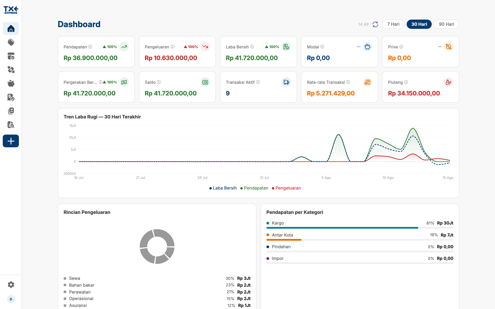
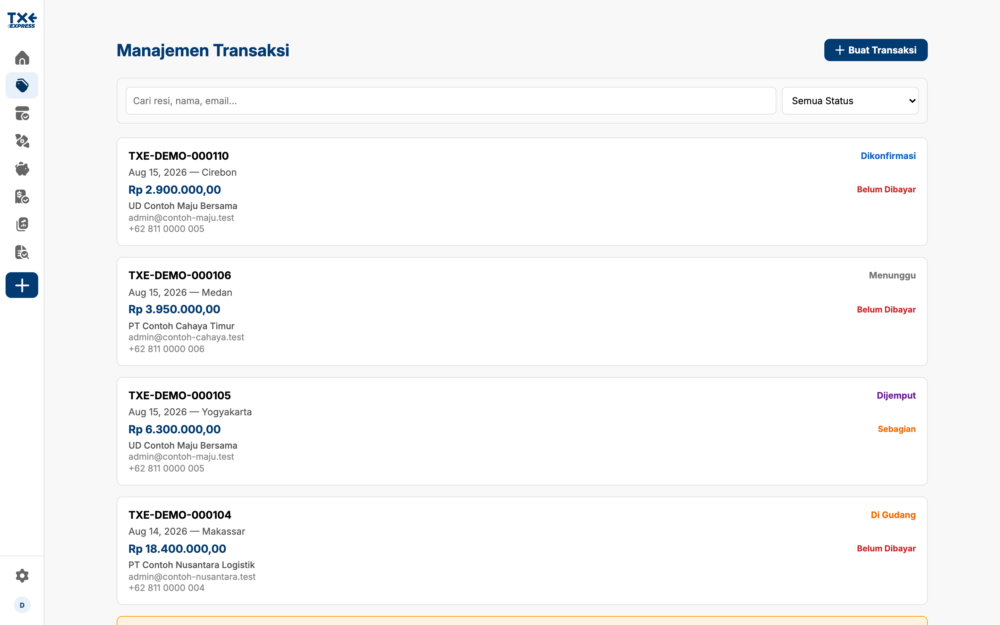
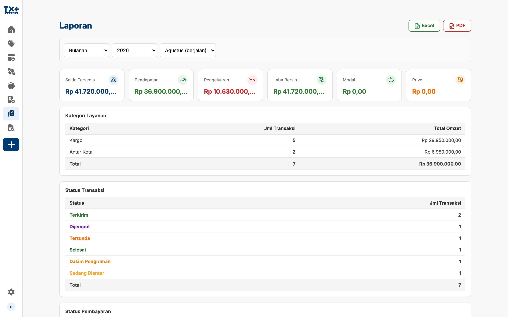
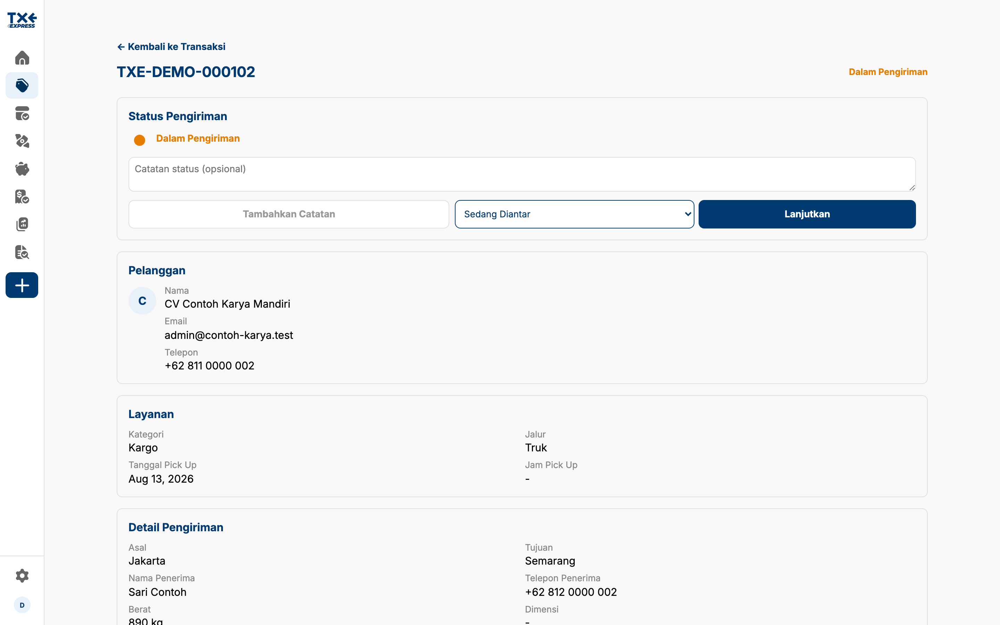

TXE Express
Operations platform for a courier and delivery company — shipment tracking, route and delivery management, dashboards, and one-tap manifest export, built end to end as the sole developer.
The Client
TXE Express is an Indonesian courier and delivery company moving cargo between cities by road, air, and sea. The work of running it — quoting a shipment, tracking where it is, chasing what has not been paid, and closing the month — sat across spreadsheets and messages. This is the system that replaced that.
What It Does
Three tiers share one application. The public site takes enquiries and lets anyone track a shipment by its number. Customers see their own transactions and place orders. Staff run the operation: operators manage shipments and their status, while the owner also gets the financial dashboard, expenses, the partner ledger, reporting, and the audit log.
Features
- Shipment tracking with map-based origin and destination
- Route and delivery status management with a full history
- Financial dashboard: revenue, expenses, net, and receivables
- Reports exported to Excel and PDF in one tap
- Partner franchise ledger, reconciled against the courier partner's own books
- Role-gated access for owner, operator, and customer
- Installable PWA, built for a warehouse and a phone alike
- Five languages through i18next
Tech Stack
- React, TypeScript, Vite
- Supabase (Postgres, row-level security, edge functions)
- Leaflet and Google Maps for location and tracking
- Recharts, jsPDF, and ExcelJS for reporting
- vite-plugin-pwa for offline and install
Access
Internal system holding live operational data, so the screenshots below were captured from a local development stack seeded with invented shipments — every tracking number, customer and amount shown is fake.



